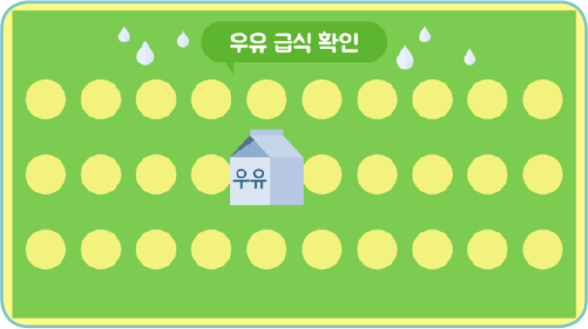
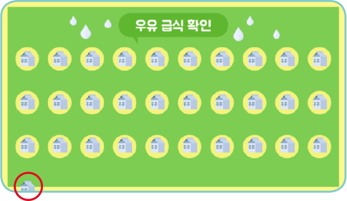
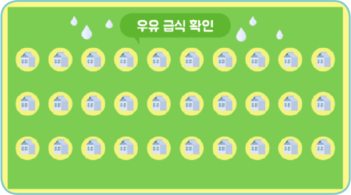
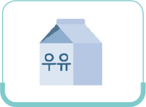
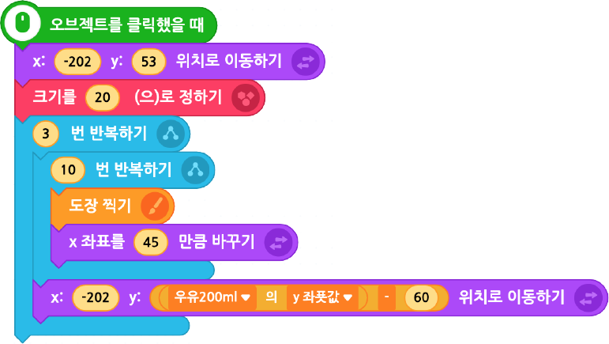

다음 실행 화면을 참고하여 우유 급식 확인 프로그램을 작성하고 디버깅해 보자.
실행 화면

▲ 초기 화면

▲ 실행 완료 화면

▲ 목표 화면
우유 200ml
- 오브젝트
-
우유 급식 확인판
우유 200ml
아래 블록을 참고하여 프로그램을 작성하고, 디버깅해 보자.

다음 줄로 내려간
우유 오브젝트가 보이는
거였어. 모양 숨기기와
모양 보이기 블록을
사용하여 오류를
수정할 수 있어.
우유 오브젝트가 보이는
거였어. 모양 숨기기와
모양 보이기 블록을
사용하여 오류를
수정할 수 있어.
이전
다음